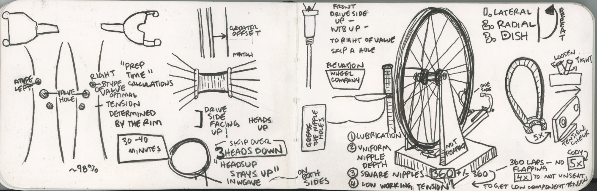
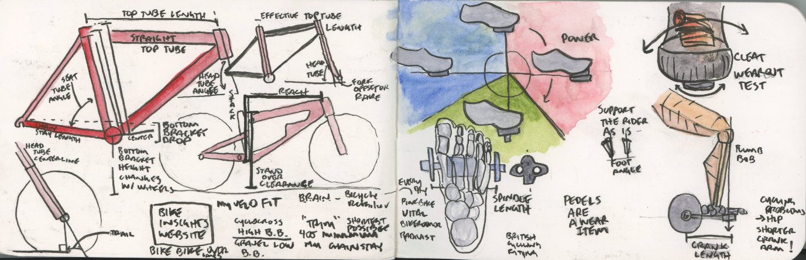
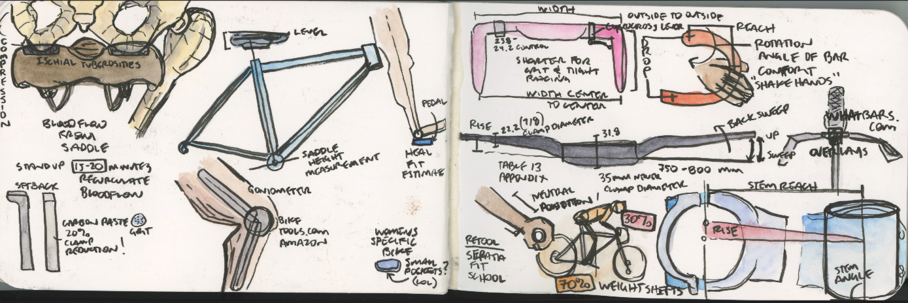

I have been riding, racing, and wrenching on my own bikes since I was in grade school. I decided to take my bike mechanic skills to the next level. This fall I completed the Professional Mechanics class at United Bicycle Institute in Ashland, Oregon. The instruction was excellent. The hands-ons were up-to-date for common technology. The course struck a great balance of lecture and hands-on application. The immersion with other bike nerds that were only thinking about bike mechanics is my preferred way to learn. I learned just as much from other students/mechanics as I did from the instructors. The hands-ons rotated partners and benches each day simulating a real shop environment. We would often end the day with a deconstruction of a component, lay everything out, and then come back the next day to a new bench with a different layout!
They teach the class as sub-systems that interact to give you the larger bike/rider/environment systems. This style of teaching helps you build intuition for what might be wrong given a few key hints (even a few steps up or down stream).
I filled an entire sketchbook with sketchnotes during the course. I plan to do a detailed series of posts on each of the following sections and the hands-on sections with my relevant sketchnotes (see examples below).
1 - Mechanical Properties
2 - Bearings
3 - Hubs
4 - Wheels, Building and Service

5 - Tires and Tubes
6 - Pedals
7 - Crankset, Bottom Brackets, Chainrings
8 - Fixed Gear, Freewheel, Freehub & Cassette
9 - Chains
10 - Derailleurs
11 - Rim Brakes
12 - Hub Brakes
13 - Headsets
14 - Suspension
15 - Frame Materials and Construction

16 - Contact Points

17 - Shop Operation and Industry
Final hands on day
Take ticket from your service writing, do full road bike inspection, complete deconstruction (wheels, hubs, brakes, handlebars, cables/housing, derailleurs, cassette, chainring, bottom bracket, etc.). Repack bearings, reassemble wheels, true wheels (<1mm tolerance) and fully reassemble bike within spec in allotted time (6 hours).
There was an odd number of students so one student was always working alone. I was chosen to work alone on the overhaul day. I finished up and got checked off only 10 minutes behind the faster students that were working in a team! WhooAHHH!
Final written test: 100 multiple choice questions in 90 minutes. Open note, but 275 pages of text to pull specific answers from!!! No practice tests.
75 to pass, I got an 88!
I have to say this was a challenging test as it was VERY specific with ~54 seconds a question. My dyslexic brain had a hard time with some of the questions under such a time crunch (e.g. double negatives –> cross reference 2 look up tables).
I am now a UBI Certified Bicycle Mechanic.